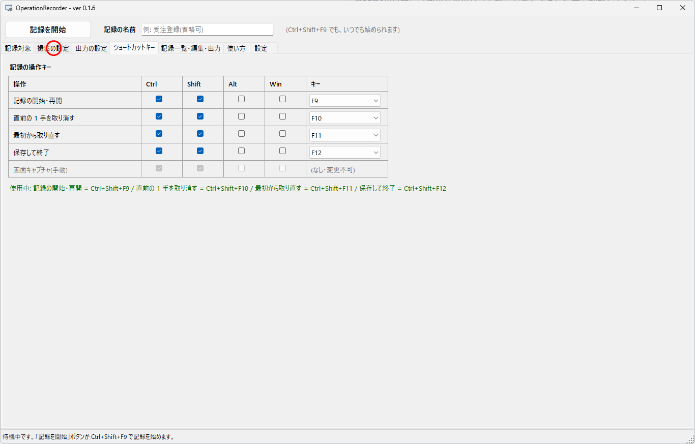
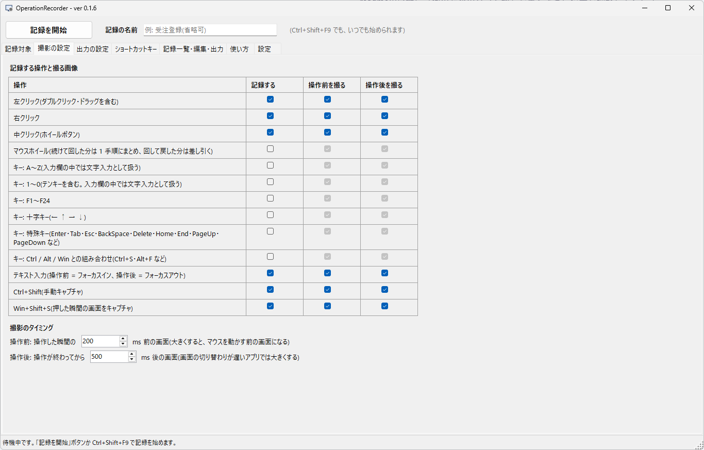
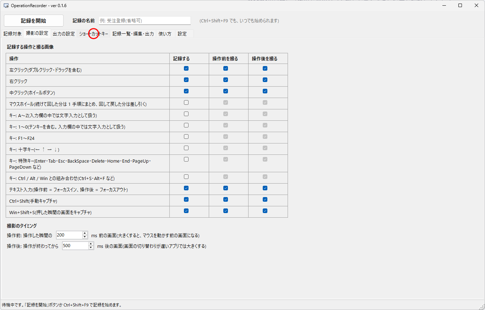
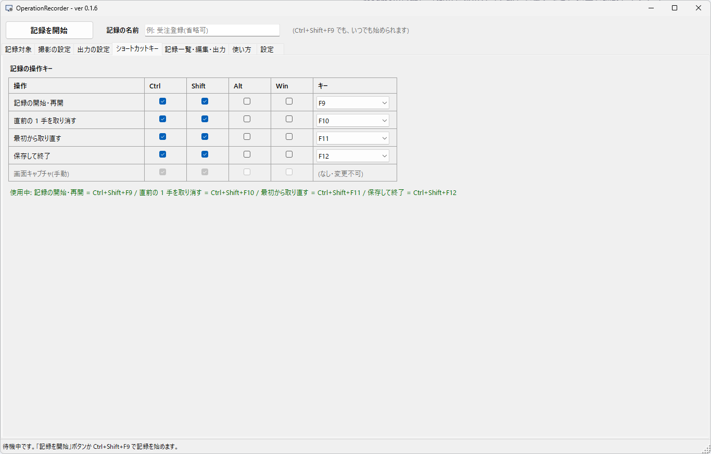

本書ではOperationRecorderの基本設定の操作手順について説明する
記録を始める前に、撮影条件と操作キーを確認する例です。
操作の種類ごとに「記録する」「操作前を撮る」「操作後を撮る」を確認します。表の下には、操作の何ミリ秒前・後を撮るかを指定する欄があります。
| 操作前 | 操作後 |
|---|---|
 閉じる（ESC） |
 閉じる（ESC） |
「記録の開始・再開」と「保存して終了」のキーを確認します。既定値はそれぞれ Ctrl+Shift+F9 と Ctrl+Shift+F12 です。
| 操作前 | 操作後 |
|---|---|
 閉じる（ESC） |
 閉じる（ESC） |